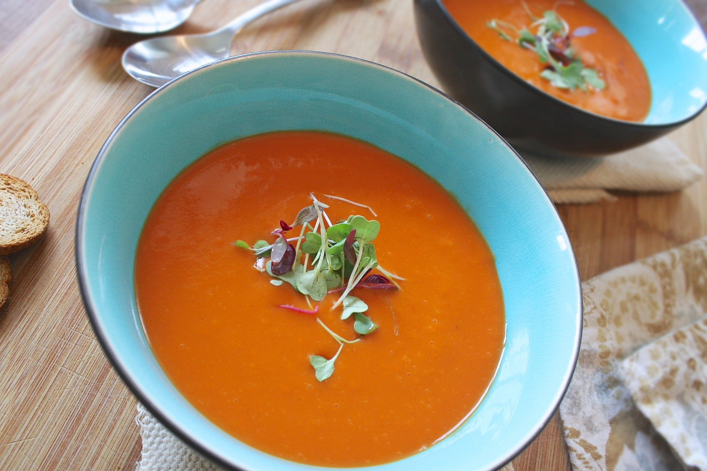

Savoury tomato soup

Description
This tomato soup is an ideal dish for a cool autumn night. This soup is perfect for freezing,
so you can it enjoy it on a busy day.
Ingredients
- 2 tablespoons of butter
- 1 small onion
- 1 can of tamatoes
- 2 cups of water
Steps
- Melt the butter in a saucepan
- Cut the onion into wedges
- Add the onion, tomatoes and the water to the saucepan and cook
uncovered for about 40 minutes
- You can blend the soup if you prefer smooth soups, otherwise, you are ready for
tasting this healthy soup